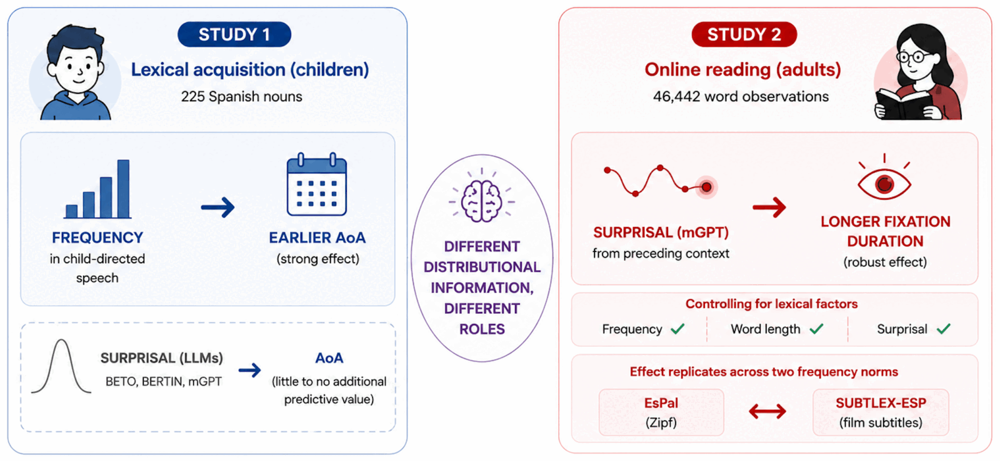

Language Acquisition
How children build a grammar from limited, noisy input — and what predictive processing reveals about the timeline of that process.
Children acquire language remarkably fast given how little clean evidence they receive: input is noisy, incomplete, and rarely comes with corrective feedback. A central question in the field is how statistical regularities in that input (frequency, contextual predictability, distributional patterns) shape the order and speed with which words and structures are learned. My work focuses on Spanish-speaking children and asks whether the same computational quantities that predict adult reading behavior (like surprisal) also predict what gets acquired first, or whether acquisition follows a logic of its own.
At BCBL's Infant Language & Cognition group, I contribute to the WordLex project on early word acquisition, combining theoretical work on cloze probability, entropy, and pseudoword processing. In parallel, my undergraduate thesis compares LLMs and adult responses measured through three metrics: cloze probability, surprisal and contextual entropy. I want to see the convergences and, of course, the divergences between these "participants".

Keep exploring